I tested Max positional encoding frequency of 2 and 10, and width of 12 and 256.
These were all trained with 3000 iterations and the parameters stated above.
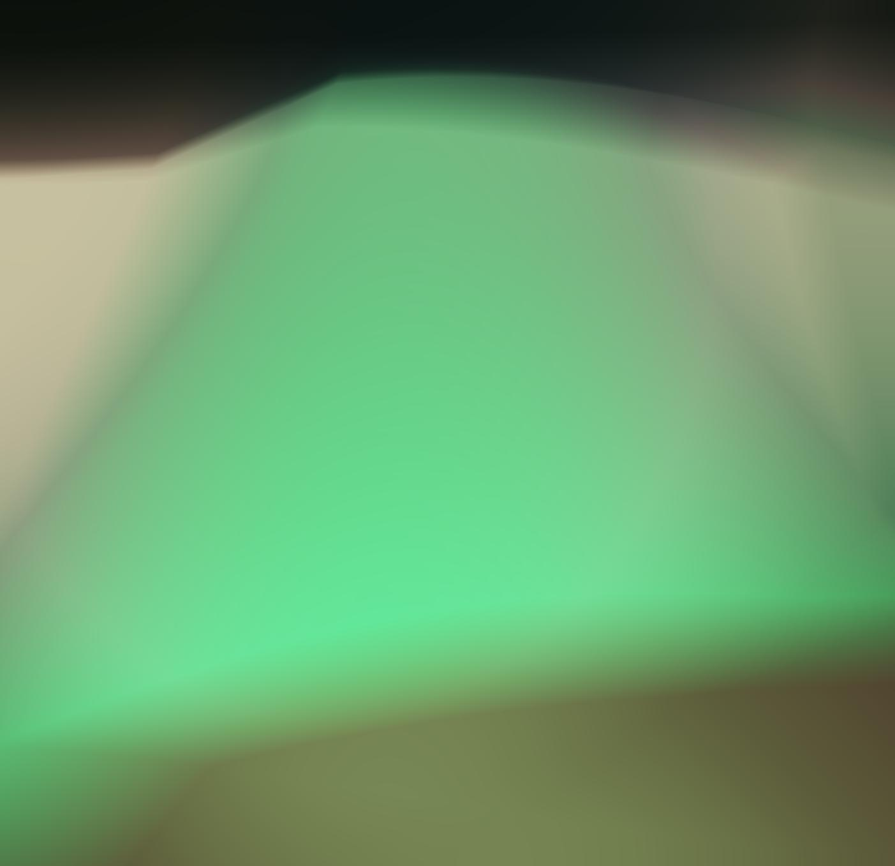
MPEF: 2, width: 12-> super blobby, no definition
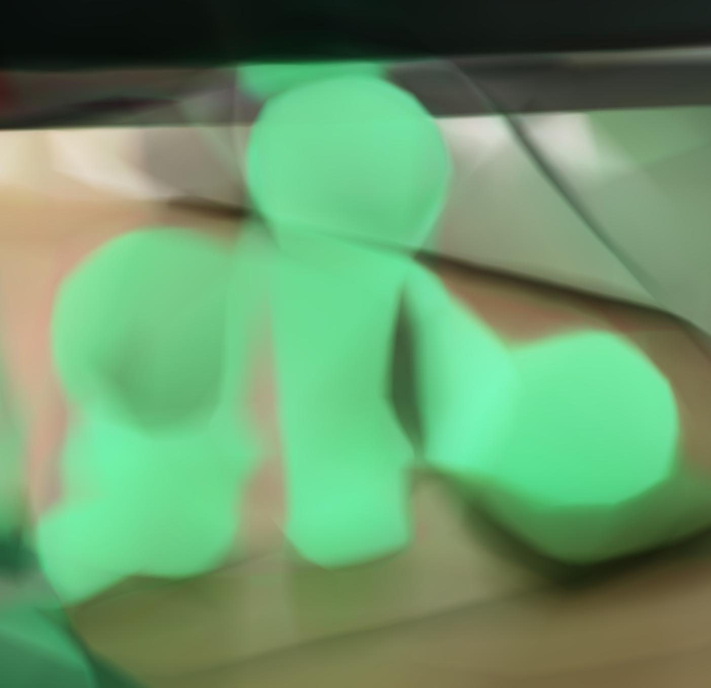
MPEF: 2, width: 256 -> get general shape but no definition

MPEF: 10, width: 12 -> get more granular definition
MPEF: 10, width: 256 -> granular definition + shape
These above images show the necessity of positional encoding, which is a contribution this paper made. Without positional encoding, naively optimizing this MLP makes the image look very smooth, and does not adequately capture high frequency details. Since we are trying to fit images with details like edges, it helps if you account for the different frequencies by mapping the input to a higher frequency space.
Part 2: Fit a Neural Radiance Field from Multi-view Images
Part 2.1: Create Rays from Cameras
For all functions within this section, I first implemented them unbatched and then added in the batching.
Camera to world coordinate conversion: we can simply multiply the c2w matrix by the x_c coordinates to get the x_w.
Pixel to camera coordinate conversion:
To get from the given equation to the camera coordinates, we multiply both sides by K inverse. It is also worth noting that we must take transposes because tensors are typically passed in a horizontal direction, but we need them to be vertical to multiply.
Pixel to ray:
First, I solve for r_o using the equation provided and the w2c matrix. I then solve for x_c to get x_w to then solve for r_d, using the equation given.
Throughout these functions I had to keep track of the dimensions of the matrices and homogenous coordinates.
Part 2.2: Sampling
Sampling rays from images:
I sample 100 images and then n//m rays per image. I batch operations and call on pixel_to_ray to get the ray origins and directions for one image at a time.
Sample along rays:
I sample along rays using torch.linspace and then add some noise along the ray. Something that I had to keep track of was that t_samples is also on the same device as the ray origins and directions
I then return points along the ray
I had to implement my own function sample_rays_single_image that allowed me to plot rays from one image, as the provided code is for the implementation where all images are flatted and we sample pixels, instead of a certain number of pixels from each image. I then used this when plotting rays from one image.
I had a bug where I was plotting pixel values as the ray origins and ray origins as the ray direction
This caused them to be bunched up closely and all parallel (pointing in same direction) because the origin for all of the rays was the same.
This makes sense because the values of the pixels were all normalized from 0 to 1 so it looked like the rays were coming out of the origin.
Plotting the origin (in blue) helped me resolve this bug!
Part 2.3: Putting the Dataloading All Together
I create a RaysData class that contains the functions I created in part 2.2, initialized with the images train, intrinsics matrix, and c2ws matrices. Here is the visualized results on the lego dataset, for rays across images and rays from a single image, after I caught my bug :D
Part 2.4: Neural Radiance Field
I create my network similarly to part 1, but have to account for the more complex structure. I create multiple self.layers_x, where x is a number or density/rgb. I account for the pe_dim by changing input dim for the first layer after adding back in the input with hidden_dim + pe_dim.
Once the network splits off into two sections to predict density and color, I need to constrain the output to be 1 dimensional for density (as density is one value) and 3 dimensional for color (has rgb values).
My forward pass applies all of these layers accordingly, flattens the positional encodings, and returns density and color.
Part 2.5: Volume Rendering
To implement volume rendering, given sigmas, color values (rgbs) and a step_size, I split the calculation into multiple steps. First, I get the T_i values using torch.cumsum, multiplying the sigmas by the step_size, then taking e to the power of the result of -torch.cumsum. I make sure to concatenate a 1 to these T values, as the first transmittance is 1. I calculate the probability of termination which si defined as 1 - e to the power of -sigmas * step_size, and then get the color weights by multiplying the T_is by the probability of termination. To get the final color, I multiply these weights by each color to get the final color.
I then set up a training loop, creating RaysData objects for the training and validation data. During the loop, I use the training data to train the model, and every 25 iterations I render the first validation image, as well as calculate the average PSNR over the 6 validation images. Here, I spent a decent amount of time with reshape and flatten commands to ensure that all the dimensions of the torch tensors matched up for operations. I also hit a few bugs where the values had to be moved to the mps device calculations were being done on. I was able to reach over 23 PSNR after 1000 iterations, training using hyperparameters described on the website. Something else I learned during this section is that you have to save your model otherwise all of the hard work training will go to waste!
Part 2.6: Training with your own data
For a while, I was stuck debugging why my own data was performing so poorly. Training on lafufu for a bit seemed fine so I gathered it was the near far parameters that needed tuning, as well as the black borders I fixed below. For my dataset I used a learning rate of 5e-4, 10000 iterations, and near and far parameters of 0.05 and 0.6 respectively.
I had to go back and crop out the black borders after undistorting images by using cv2.getOptimalNewCameraMatrix
so it would not influence the trays (making world inconsistent with random black areas).
To render spherically, I had to experiment with the center of the world and starting position-> you couldn’t see the smiski well in my first couple of renders. Plotting in viser revealed that my object was not at the origin so this shift had to be accounted for throughout.
Nobody told me that colab was so much faster than the MPS backend TT so switching over to colab was very helpful in speeding things up! 3 hours vs 15 minutes makes a huge difference.
My guess as to why the validation PSNR is lower than that of the lego dataset is I have less views and the lighting invariance could have been problematic. My desk is next to a window, and the lighting may have changed between images. The smiski is also smaller than the lafufu so I wonder if that means less sampled rays intersected through it.
The continually reducing loss but stagnant validation PSNR may point to overfitting on my dataset.
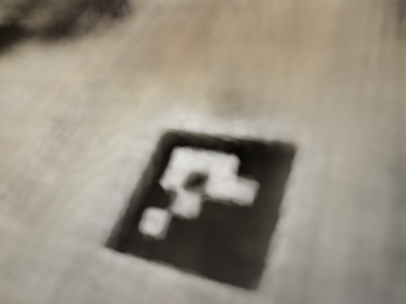
training iteration 500
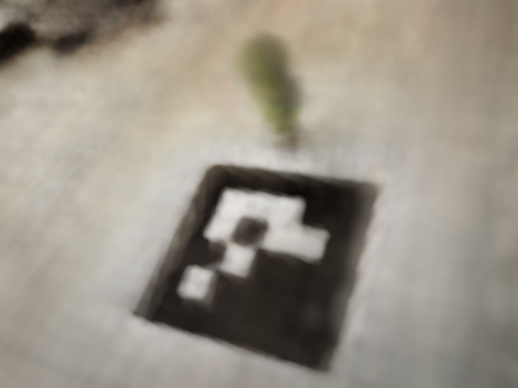
training iteration 1000
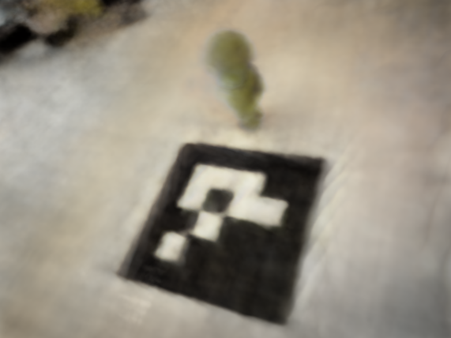
training iteration 2500
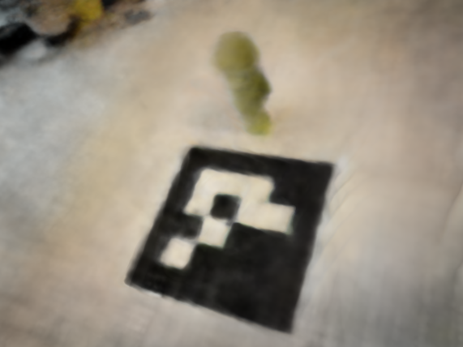
training iteration 5000
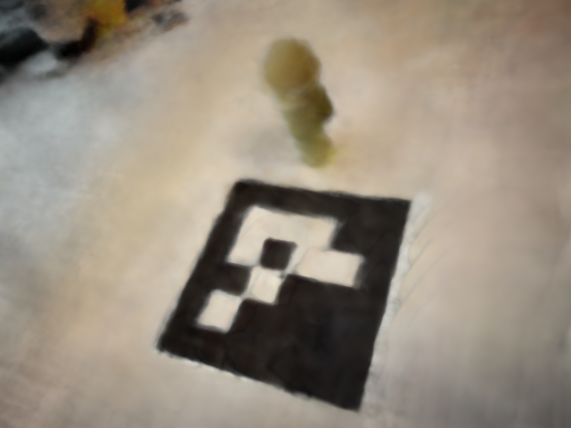
training iteration 7500
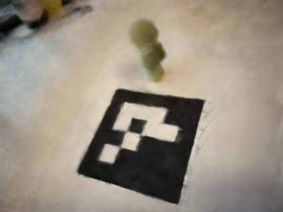
training iteration 10000
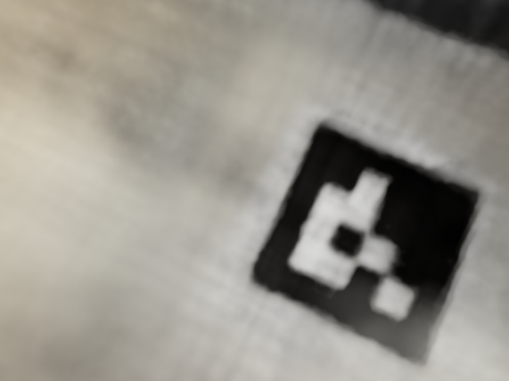
validation iteration 500
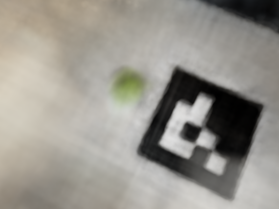
validation iteration 1000
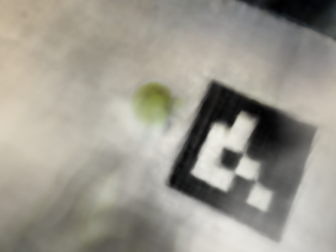
validation iteration 2500
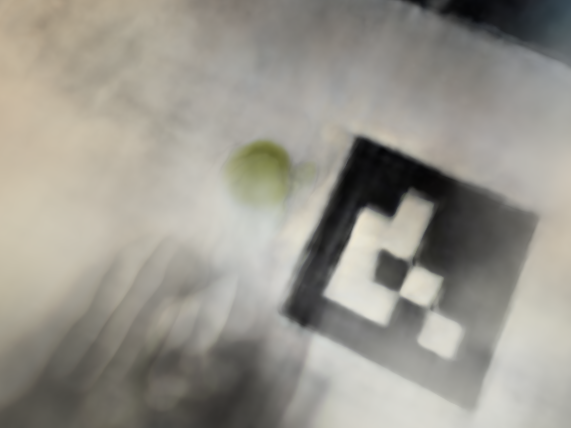
validation iteration 5000
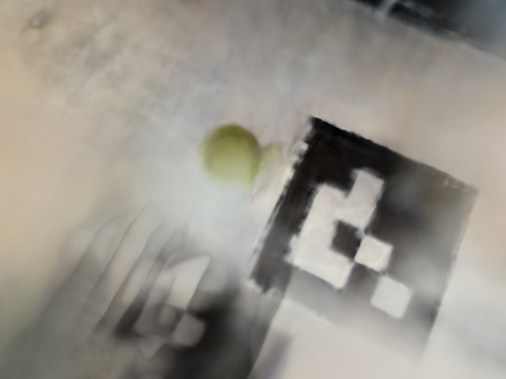
validation iteration 7500
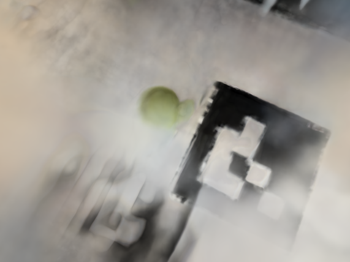
validation iteration 10000

bad starting position

good starting position

good starting position and near far
I used ezgif to generate the gifs from the test images. There are still some artifacts in the good starting position, but it's much easier to see the green smiski! It turns out I had a bug where my
near and far values were hard coded to 2 and 6 from the lego example, so fixing that produced an even better gif. Note, the lego gif at the end of 2.5 and smiski gifs in 2.6 will not be present in the website pdf.
Overall, this project was very interesting, but also the most challenging of the projects so far! The timeline with 189 didn’t line up great, so I had to learn about neural networks here at the same time as 189. It’s interesting how ML is very loosey-goosey–when my code wasn’t working, there was no fixed guidance on what hyperparameters to tune. There was a lot more guess and check. It was really cool to see how the last month of content has all tied together, from 3D all the way to nerf!